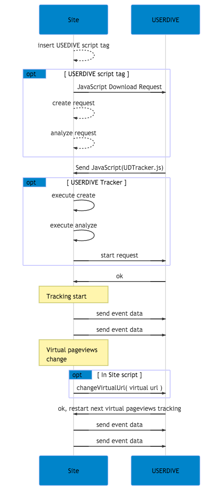

Table of Contents generated with DocToc
changeVirtualUrl API
USERDIVE では、ユーザーの起こしたアクションを URL (window.location.href) 単位に集約し、分析を行うことができます。
USERDIVE では同一のURLで動的に要素の追加を行うサイトの分析も行うことができます。
<script>
ud("changeVirtualUrl", "[ Virtual Url ]");
</script>
| Field | Type | Required | Description |
|---|---|---|---|
| Virtual URL | String | Yes | 現在の状態の仮想ページ URL |
changeVirtualUrl API は下記のようなページでの利用を推奨しています。
- ページの遷移を行わず表示の要素が変化するサイト
- Ajaxなどの非同期通信を利用したサイト
- JavaScript フレームワークを利用したサイト
- AngularJS
- Backbone.js
- Ember.js
- jQuery
- React.js
- Vue.js
- etc
sequence diagram

サポート外の項目
changeVirtualUrl API を利用した分析では、下記のことをサポートしていません。
- フォーム分析、およびそれに関係するイベントの計測
確認方法
(example) を例に確認方法について記載します。 確認には DeveloperTools などを用います。
examples ではヘッダー内に存在している About をクリックすることにより、 changeVirtualUrl を実行します。
//harpoon3.userdive.com/v2/eventsへの送信データに含まれるurlの値を確認ください。changeVirtualUrlを実行後、引数で与えられたURLにurlの値が変更されていることを確認してください。